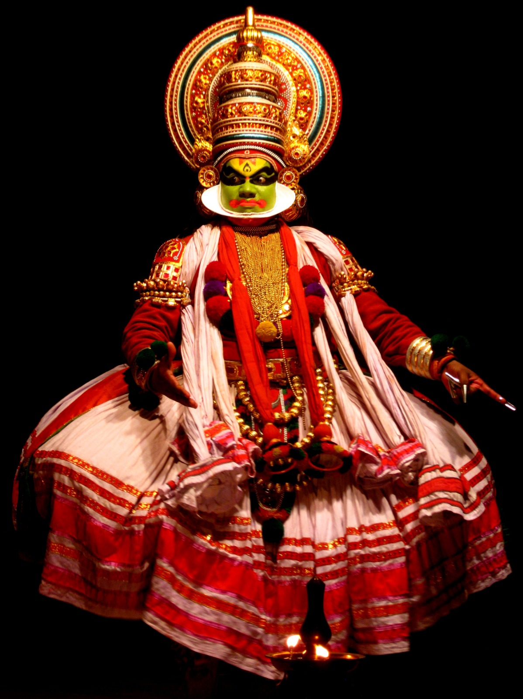

KATHAKALI

Kathakali is another traditional dance form of India which relates to the storytelling. Kathakali translates to the 'storyteller' in the country's language. Coming from the Southern region of the country from Kerala, Kathakali is one of the most renowned and religious dances forms of India. It originates from the tales of Ramayana and Shiva stories. Kathakali includes the intriguing face movements and the heavy costumes which include the traditional face masks and body paints (generally green). The music which includes only the vocals is called Soppanam. The storytelling of the epic Hindu mythology tales depicting both evil and good is shown through the conversation between the dancers only through their body gestures and facial expressions. Simply fascinating to watch!